Atrofia, nekróza, apoptóza
Homeostáza a hranica reverzibility, atrofia, dve cesty bunkovej smrti, apoptóza, nekróza (druhy, príčiny, osud), gangréna, autofágia, smrť organizmu a posmrtné zmeny.
Predpoklady: —
Odborná kontrola: zatiaľ neprebehla — fakty sú overené len podľa zdrojov uvedených na konci kapitoly · Nahlásiť chybu
1.1Homeostáza a hranica reverzibility
- Bunka aj celý organizmus si za normálnych okolností udržujú stabilné vnútorné prostredie (homeostáza) – stálu teplotu, pH, hladiny iónov aj objem tekutín. Robí to vďaka spätnoväzbovej regulácii: receptory zaznamenajú odchýlku, centrum (napr. mozog, endokrinná žľaza) rozhodne a efektor (hormón, nerv) sa snaží odchýlku vrátiť do normy.
- Čokoľvek, čo túto rovnováhu naruší, sa nazýva stresor (noxa) – môže byť fyzikálny (teplo, žiarenie, trauma), chemický (toxín, nedostatok kyslíka), biologický (infekcia) alebo aj genetický.
- Čo sa s bunkou stane, závisí od sily a dĺžky pôsobenia stresora:
- mierny/krátky stresor → bunka sa naň prispôsobí a nastaví nový, stabilný stav = adaptácia (môže ísť aj o zväčšenie – hypertrofia, hyperplázia – aj o zmenšenie – atrofia, → 1.2 Atrofia – alebo zmenu typu buniek – metaplázia)
- ak adaptácia nestačí → poškodenie buniek; kým sa dá príčinu odstrániť a bunka sa spamätá, je poškodenie reverzibilné (napr. dystrofie, → 2.2 Dystrofie – hlavná myšlienka)
- ak poškodenie prekročí bod nezvratnosti → ireverzibilné poškodenie = bunková smrť, buď riadene (apoptóza) alebo neriadene (nekróza)
Dystrofia, atrofia aj nekróza ležia na tej istej škále narastajúceho poškodenia – líšia sa len mierou. Pri každej regresívnej zmene si polož jednu otázku: „Je toto poškodenie ešte reverzibilné, alebo je už za bodom zvratu?“
1.2Atrofia
- Atrofia = adaptívne zmenšenie už vyvinutého orgánu alebo tkaniva. Kľúčové je, že bunky pritom ostávajú nažive a funkčné, len menšie alebo menej početné – to je zásadný rozdiel oproti nekróze, kde bunky zomierajú.
- difúzna atrofia – postihuje celý orgán rovnomerne, jeho tvar ostáva zachovaný, len sa zmenší
- ložisková atrofia – postihuje len časť orgánu, ktorá je vystavená lokálnej príčine (tlak, nedokrvenie), tvar orgánu sa zmení
Atrofia vzniká dvomi cestami, ktoré sa môžu kombinovať:
- prostá atrofia – zmenšia sa existujúce bunky (↓ proteosyntéza + ↑ odbúravanie bielkovín ubikvitín-proteazómovým systémom a autofágiou, → 1.9 Autofágia). Spúšťačom je strata „anabolického“ signálu (↓ záťaž, ↓ inzulín a rastové faktory, ↓ inervácia) → bunka menej bielkovín tvorí a viac ich odbúrava, takže sa zmenšuje. Typická pre tkanivá s nízkou schopnosťou regenerácie (srdce, mozog, kostrový sval) – tie sa nemôžu zbaviť „prebytočných“ buniek, tak sa zmenšia tie, čo tam sú.
- numerická atrofia – ubúda počet buniek, hlavne apoptózou (→ 1.4 Apoptóza). Typická pre tkanivá s vysokou schopnosťou regenerácie (koža, kostná dreň) – tam sa jednoducho spomalí dopĺňanie a bunky ubúdajú.
1.2.1Príčiny atrofie
Bunka si udrží veľkosť, kým dostáva materiál a kyslík a signál, že je potrebná. Atrofia vznikne, keď jedno z toho chýba – alebo keď bielkoviny aktívne rozkladajú cytokíny:
- Chýba signál na rast:
- sval bez záťaže – imobilizácia v sadre, dlhé ležanie (atrofia z inaktivity),
- sval bez nervu – poranenie nervu, ALS; stráca trofický aj kontrakčný podnet celá motorická jednotka naraz, preto vzniká skupinová atrofia vlákien (neurogénna, Obr. 1.4),
- orgán bez hormónu – kôra nadobličiek, keď hypofýza prestane tvoriť ACTH, endometrium po menopauze (endokrinná).
- Chýba prísun:
- zúžená tepna, najčastejšie aterosklerotická – atrofia mozgu (vaskulárna),
- dlhodobý tlak, ktorý utlačí cievy a bunky – nádor, kameň; mestnanie moču stenčí obličku až na tenkostenný vak – hydronefróza (tlaková),
- celkový nedostatok živín – hladovanie, mentálna anorexia (inaničná, lat. inanis = prázdny).
- Bielkoviny sa aktívne rozkladajú: pri kachexii nádor a imunitné bunky uvoľňujú cytokíny (TNF – pôvodne kachektín –, IL-1, IL-6), ktoré tlmia chuť do jedla a zároveň zrýchľujú rozklad svalových bielkovín a tuku; atrofia preto postupuje aj pri dostatku jedla.
Neurodegeneratívne choroby sú v podstate selektívna numerická atrofia konkrétnej skupiny neurónov: Alzheimerova choroba = atrofia mozgovej kôry, Parkinsonova choroba = atrofia dopamínergných neurónov, ALS = atrofia motoneurónov a následne aj svalov, ktoré strácajú inerváciu.
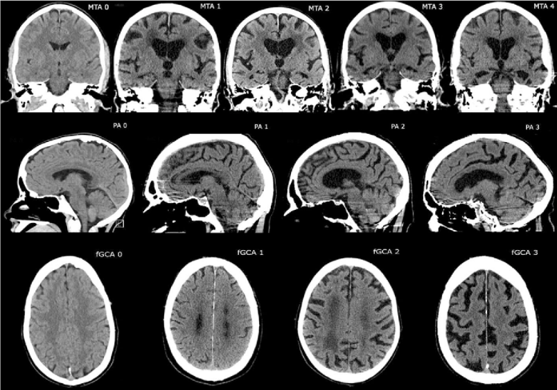
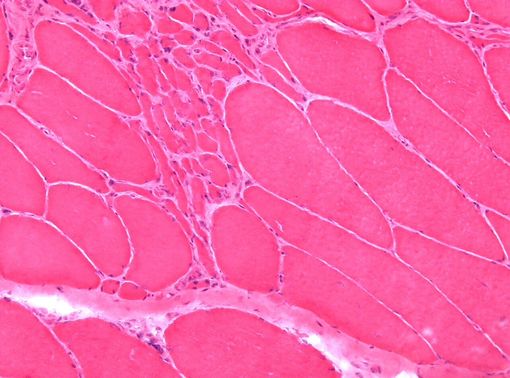
1.2.2Ako atrofické tkanivo vyzerá a čo sa s ním deje ďalej
- Atrofická bunka má menej organel, ale nestráviteľné zvyšky autofágie si ponechá: lipofuscín (pigment z opotrebenia) sa v menšej bunke zahustí a orgán stmavne – hnedá atrofia (atrophia fusca; srdce a pečeň starých ľudí).
- Priestor po ubudnutom parenchýme vyplní iné tkanivo – väzivo (skleróza) alebo tuk (lipomatózna pseudoatrofia). Orgán potom môže mať normálnu veľkosť, hoci funkčného tkaniva je v ňom menej.
Toto je presne lipomatóza (→ 2.3.2 Lipomatóza) – tuk tam nahrádza stratený funkčný parenchým. Teraz vidíš, že ide o jednu z typických sekundárnych zmien atrofického tkaniva, nie o samostatný náhodný jav.
- Hranica reverzibility: atrofia je vratná, kým sa bunky len zmenšili a príčinu možno odstrániť – sval po sňatí sadry znova zosilnie. Keď bunky ubudli v tkanive, ktoré sa neobnovuje, alebo ich miesto už obsadilo väzivo, strata je trvalá (neuróny pri Alzheimerovej chorobe, hydronefrotická oblička).
1.3Ako bunka zomiera – dve cesty
- Keď poškodenie prekročí hranicu opraviteľnosti, bunka zomrie jedným z dvoch zásadne odlišných spôsobov:
| Apoptóza | Nekróza | |
|---|---|---|
| Riadenie | aktívna, riadená, spotrebúva ATP | chaotická, neriadená |
| Rozsah | jednotlivé bunky | skupiny buniek, celé oblasti tkaniva |
| Reakcia okolia | žiadny zápal | vždy zápal |
- Podrobný mechanizmus oboch nájdeš v → 1.4 Apoptóza a → 1.5 Nekróza – základné pojmy a priebeh. To, ktorou cestou sa bunka vyberie, závisí hlavne od typu poškodenia – nie je to ale pravidlo bez výnimky:
- náhly výpadok energie a poškodenie membrán (hypoxia, ischémia, oxidačný stres) vedú skôr k nekróze – bunka nemá ani energiu, ani neporušené membrány na to, aby sa riadene rozložila
- poškodenie DNA, nahromadenie chybne zložených bielkovín alebo strata rastových/prežívacích signálov vedú skôr k apoptóze – bunka má ešte dosť energie na to, aby sa „rozhodla“ a riadene zanikla
1.4Apoptóza
- Apoptóza (z gréčtiny – „odpadávanie“, ako lístie zo stromu) je programovaná bunková smrť: riadený proces, ktorým bunka aktívne rozloží samu seba na uzavreté balíčky, bez toho, aby jej obsah unikol do okolia.
- Nie je to len patologický jav – je to rovnako dôležitý fyziologický nástroj ako delenie buniek: modeluje orgány počas embryogenézy, vyraďuje nebezpečné lymfocyty pri ich výcviku v týmuse a priebežne udržiava správny počet buniek v tkanivách.
1. Indukčná fáza – aktivácia kaspáz (proteolytických enzýmov) jednou z dvoch ciest:
- vnútorná (mitochondriová) dráha – spúšťa ju poškodenie vnútri bunky (DNA, bielkoviny) alebo strata rastových faktorov. O osude rozhoduje rovnováha rodiny BCL-2: ochranné BCL-2, BCL-xL a MCL-1 ⊣ efektory BAX a BAK; keď stres prevládne, BAX a BAK prederavia vonkajšiu mitochondriovú membránu → do cytosolu unikne cytochróm c → aktivuje sa kaspáza 9.
- vonkajšia (receptorová) dráha – spúšťa ju väzba „ligandu smrti“ (napr. FasL = Fas ligand, TNF = tumor nekrotizujúci faktor) na receptor smrti na povrchu bunky (Fas, TNFR1 = TNF-receptor 1) → aktivuje sa kaspáza 8.
2. Exekučná fáza – obe dráhy sa stretávajú pri aktivácii exekučných kaspáz (3, 7). Tie aktivujú endonukleázu, ktorá strihá DNA pravidelne medzi nukleozómami, a štiepia cytoskelet aj jadrovú laminu → jadro a cytoplazma sa kondenzujú a zmršťujú, vytvárajú sa výbežky (blebs), ktoré sa odškrcujú ako apoptotické telieska.
3. Fagocytóza – fosfatidylserín, ktorý je normálne len na vnútornej strane membrány, sa preklopí na vonkajšiu („zjedz ma“ signál) → makrofágy a susedné bunky telieska pohltia a strávia skôr, než membrána praskne. Obsah bunky sa tak nedostane do okolia, a preto apoptóza nezanecháva stopy ani zápal.
Jednotlivá, rozptýlená bunka medzi živými susedmi: zmenšená, s tmavo eozinofilnou cytoplazmou (zahustené bielkoviny) a hyperchrómnym jadrom, ktoré je zhrudkované pod membránou alebo rozpadnuté na úlomky; okolo býva svetlý lem (bunka sa odtiahla od susedov). Okolie bez zápalového infiltrátu. Makroskopicky apoptóza nevidno – postihuje jednotlivé bunky, nie ložiská.
Na reze sa apoptóza podceňuje, lebo telieska sa rýchlo odstránia. Potvrdí ju značenie nastrihanej DNA (TUNEL) alebo imunohistochémia aktívnej kaspázy 3; pri elektroforéze dá pravidelne nastrihaná DNA „rebrík“, kým pri nekróze rozmazanú škvrnu.
Bunka s poškodenou DNA sa má zabiť sama. Strážcom je p53: zastaví bunkový cyklus a keď oprava zlyhá, zapne proapoptotické gény. Nádory tento zámok obchádzajú dvoma cestami – stratou p53 (mutácia génu TP53 je najčastejšou mutáciou v ľudských nádoroch) alebo nadbytkom ochranného BCL-2 (pri folikulovom lymfóme translokácia t(14;18) presunie gén BCL2 k silnému zosilňovaču génu imunoglobulínu). Výsledok je rovnaký: poškodené bunky prežívajú a hromadia ďalšie mutácie.
1.4.1Kedy sa s apoptózou stretneš
Príklady sa dajú zoradiť podľa toho, čo apoptózu spustí – a teda ktorou dráhou prebehne:
| Čo apoptózu spustí | Dráha | Kde sa s tým stretneš |
|---|---|---|
| stratí sa signál na prežitie (hormón, rastový faktor, antigén) | vnútorná | odlúpenie endometria pri poklese progesterónu, involúcia mliečnej žľazy po dojčení, zmenšenie prostaty po kastrácii; lymfocyty v zárodkovom centre uzliny, ktoré po skončení imunitnej reakcie nedostanú signál |
| poškodí sa DNA alebo sa nahromadia zle zložené bielkoviny | vnútorná (p53) | bunky nádoru po ožiarení a chemoterapii – na tom stojí účinok liečby |
| bunku zabije cytotoxický T lymfocyt alebo NK bunka (Fas ligand, granzýmy) | vonkajšia | hepatocyty napadnuté vírusom – Councilmanove (acidofilné) telieska (Obr. 4.2); vyraďovanie lymfocytov, ktoré by reagovali proti vlastnému telu |
| vývojový program | obe | embryogenéza – miznutie blán medzi prstami, modelovanie orgánov |
1.4.2Nekróza vs. apoptóza – kompletné porovnanie
| Otázka | Apoptóza | Nekróza |
|---|---|---|
| Potrebuje energiu? | áno – riadený program spotrebúva ATP | nie – vzniká práve z nedostatku ATP |
| Čo robí bunka? | zmrští sa a rozpadne na uzavreté telieska | napučí a praskne |
| Membrána | celá až do pohltenia | prederavená už na začiatku |
| DNA | strihaná pravidelne („rebrík“) | rozpadá sa náhodne |
| Koľko buniek | jednotlivé, rozptýlené | súvislé skupiny, ložisko |
| Okolie | ticho, bez zápalu | zápal (vitálna reakcia) |
| Typický príklad | obnova epitelu, bunka napadnutá vírusom | infarkt, absces |
1.5Nekróza – základné pojmy a priebeh
- Nekróza = intravitálne (za života) odumretie bunky, tkaniva alebo celého orgánu. Slovo „intravitálne“ je kľúčové – odlišuje nekrózu od zmien, ktoré nastanú až po smrti organizmu (posmrtná autolýza, → 1.10 Smrť organizmu a posmrtné zmeny).
- Ide o neriadený rozpad (v anglickej literatúre „accidental death“). Obsah prasknutých buniek sa vyleje do okolia, ich vlastné lyzozómové enzýmy tkanivo natrávia a signály poškodenia privolajú leukocyty – nekrózu preto vždy sprevádza zápal okolia, tzv. vitálna reakcia.
Práve vitálna (zápalová) reakcia je to, čo odlišuje nekrózu od posmrtnej autolýzy. Ak sa v okolí odumretého tkaniva nájdu leukocyty, poškodenie vzniklo za života (nekróza). Ak zápal chýba, ide o rozklad tkaniva po smrti organizmu (autolýza) – dôležité pri každej pitve (→ 0.9 Pitva) aj v súdnom lekárstve.
Klasické delenie rozlišuje riadenú apoptózu a neriadenú nekrózu. Nomenclature Committee on Cell Death (2018) dnes delí smrť bunky na náhodnú (okamžité zničenie extrémnym podnetom – teplom, pH, mechanickou silou) a regulovanú, ktorá má vlastný molekulový aparát. Do regulovanej patria aj formy, ktoré vyzerajú ako nekróza (praskne membrána, vznikne zápal) – napr. nekroptóza a pyroptóza. Samotný vzhľad preto náhodnú a regulovanú smrť nerozlíši; opis nekrózy v tejto kapitole ostáva správny pre bežné ischemické a toxické poškodenie.
1.5.1Mechanizmus – ako sa bunka rozpadne
1. Dva vstupy. Noxa zasiahne bunku buď cez energiu (hypoxia, ischémia: ↓ O₂ → zastaví sa oxidatívna fosforylácia → ↓ ATP), alebo priamo cez membránu (bakteriálne toxíny, komplement, teplo, chemikálie, voľné radikály peroxidujúce lipidy membrán).
2. Zlyhajú iónové pumpy. Bez ATP (alebo cez prederavenú membránu) sa nedá udržať iónový spád: Na⁺ a voda vstupujú, K⁺ uniká → bunka napučí (rovnaký dej ako pri kalnom zdurení, → 2.4.1 Kalné zdurenie – tu však nezvratný). Bez ATP sa zastaví aj proteosyntéza (ribozómy sa odlúpnu z ER) a bunka prejde na glykolýzu → laktát → ↓ pH.
3. Vtečie Ca²⁺. Zlyhajú Ca²⁺-pumpy a do cytosolu vtečie Ca²⁺ zvonka aj z ER a mitochondrií. Ca²⁺ aktivuje fosfolipázy (rozkladajú membrány), proteázy (cytoskelet), endonukleázy (DNA) a otvorí mitochondriový pór MPT (→ 1.5.3 Bod nezvratnosti a reperfúzia).
4. Prasknú membrány. Rozrušená plazmatická membrána a membrány lyzozómov → hydrolázy sa vylejú do cytoplazmy a bunku natrávia; bielkoviny zároveň denaturujú (↓ pH, strata štruktúry).
5. Výsledok = natrávenie bunky + denaturácia bielkovín = NEKRÓZA. Obsah bunky (DNA, ATP, HMGB1, enzýmy) unikne von, pôsobí ako signál poškodenia (DAMP) pre makrofágy a endotel → zápalová reakcia okolia.
1.5.2Histologické znaky nekrotickej bunky
| Štruktúra | Normálna bunka | Nekrotická bunka |
|---|---|---|
| Cytoplazma | bazofilná/eozinofilná zmiešane | výrazne eozinofilná (sýto ružová) – dve príčiny: rozložila sa RNA, na ktorú sa viaže hematoxylín, a denaturované bielkoviny viažu viac eozínu |
| Jadro | farbiteľné hematoxylínom (bazofilné) | chýba / nie je farbiteľné – zaniká postupne: pyknóza → karyorexa → karyolýza |
- Pyknóza – jadro sa zmrští, chromatín sa maximálne zhustí do tmavej homogénnej hrudky.
- Karyorexa – pyknotické jadro sa rozpadne na viacero úlomkov.
- Karyolýza – zvyšné úlomky sa enzymaticky rozpustia a jadro z rezu úplne zmizne.
- Je to časová postupnosť jedného deja, nie tri rôzne alternatívy – to isté jadro nimi postupne prechádza.
Morfológia je výsledok rozkladu, nie samotnej smrti: kým enzýmy natrávia bielkoviny a jadro a kým sa zmení väzba farbív, uplynú hodiny. Poradie pri ischémii myokardu:
- sekundy až minúty – ↓ ATP, sval prestane kontrahovať (do 1–2 min); zmena je zatiaľ len biochemická a vratná,
- ≈ 20–40 min – prvé nezvratne poškodené kardiomyocyty (subendokard); v elektrónovom mikroskope prasknuté membrány a denzné telieska v mitochondriách,
- hodiny – troponín prenikne cez poškodenú membránu do krvi (vysokocitlivé stanovenie ho zachytí v priebehu prvých hodín), na reze ešte nič,
- 4–12 h – prvé zmeny vo svetelnom mikroskope (začínajúca koagulačná nekróza, zvlnené vlákna),
- 12–24 h a viac – zmena makroskopicky (tmavé škvrnité ložisko, neskôr žltobiele).
Pacient, ktorý zomrie do niekoľkých hodín po uzávere tepny, preto môže mať na pitve makroskopicky normálne srdce – nekrózu treba hľadať mikroskopicky alebo histochemicky.
Únik vnútrobunkových bielkovín cez poškodenú membránu do krvi sa dá laboratórne merať a objektivizovať tak nekrózu konkrétneho orgánu ešte pred jej viditeľnosťou:
- myokard – troponíny, CK-MB, myoglobín
- pečeň (hepatocyty) – ALT, AST
- kostrový sval – celková CK, myoglobín
Marker nestúpa hneď: musí najprv uniknúť z bunky a dostať sa lymfou a krvou do obehu. Preto sa pri podozrení na infarkt odber opakuje a rozhoduje vzostup, nie jedna hodnota.
1.5.3Bod nezvratnosti a reperfúzia
- Bunka je zachrániteľná, kým mitochondrie vedia po návrate O₂ znova vyrobiť ATP a membrány sú celé. Tieto dve podmienky sa rozpadajú spolu, lebo sa navzájom poháňajú (circulus vitiosus ⟳, Obr. 1.8):
- Bod zvratu = trvalé otvorenie póru MPT vo vnútornej mitochondriovej membráne: mitochondria potom nevyrobí ATP ani s kyslíkom a fosfolipázy, proteázy a lyzozómy dokončia zvyšok.
- Reperfúzia (obnovenie prietoku) zachráni reverzibilne poškodené bunky, no tie blízko bodu zvratu môže zabiť: počas ischémie drží pór zatvorený kyslé pH; po návrate krvi sa pH upraví a zároveň príde O₂ (→ nárazová tvorba ROS) a energia, ktorá ženie Ca²⁺ do mitochondrií → pór sa otvorí.
Pri infarkte sa tepna napriek tomu otvára čo najskôr (PCI, trombolýza) – ischémia trvajúca > 20 min posúva vlnu nekrózy od subendokardu k epikardu, a každá ušetrená minúta zachráni viac svaloviny, než reperfúzia poškodí.
1.6Druhy nekrózy
- Rozhodujúce je, či po smrti buniek prevládne denaturácia bielkovín (tkanivo drží tvar), alebo enzymatické natrávenie (tkanivo sa skvapalní):
Bielkovinová „kostra“ tkaniva (kolagén, štruktúrne proteíny) drží tvar aj po smrti buniek. Ak jej je veľa a denaturuje (zrazí sa ako uvarený vaječný bielok), tkanivo stuhne a ešte istý čas si drží pôvodný obrys = koagulačná nekróza – typická pre ischemickú nekrózu pevných orgánov (srdce, oblička, slezina): po ischémii klesne pH, čo denaturuje aj enzýmy, ktoré by tkanivo rozložili.
- Ak enzýmy prevážia (hnisavý zápal s masou neutrofilov a ich proteáz) alebo pri ischémii mozgu (dôvod, prečo sa mozog skvapalní a nezrazí, nie je úplne objasnený), tkanivo sa enzymaticky skvapalní = kolikvačná nekróza.
1.6.1Koagulačná nekróza
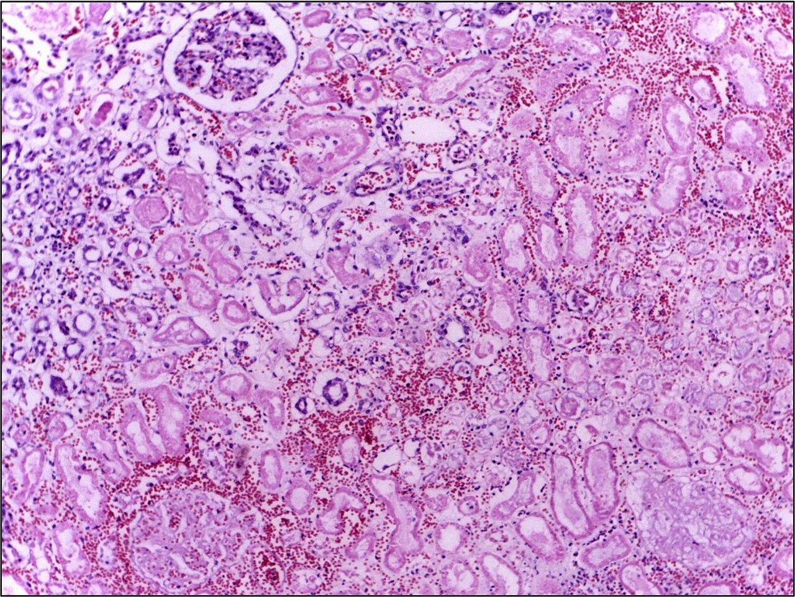
- Typický obraz ischémie a infarktu (strata krvného zásobenia). Mikroskopicky ostávajú zachované obrysy buniek („tieňové bunky“ – ghost cells) ešte niekoľko dní predtým, než ich odstránia fagocyty – bielkoviny sa zrazili a dočasne konzervovali architektúru tkaniva.
Klasický príklad je infarkt myokardu: koagulovaná, no ešte rozpoznateľná štruktúra svalových vlákien bez jadier. Enzýmy (troponín) sa uvoľnia do krvi skôr, než je zmena viditeľná pod mikroskopom.
1.6.2Kolikvačná nekróza
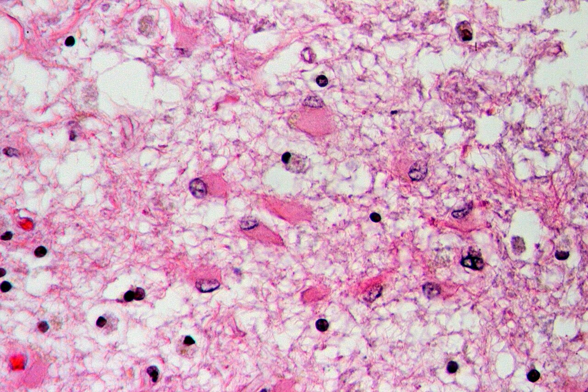
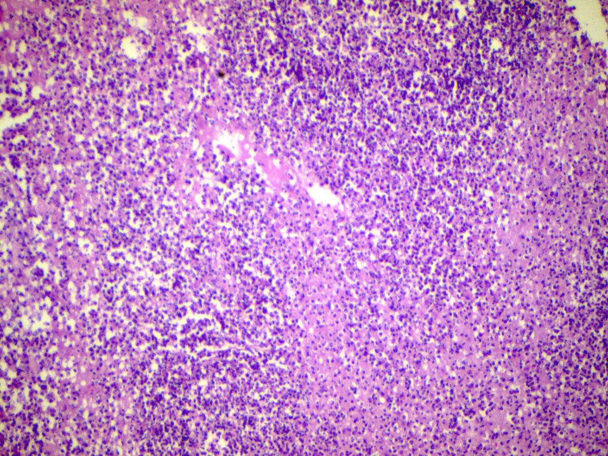
- Typická pre abscesy (→ 4.5 Hnisavý (purulentný) zápal; masa neutrofilov uvoľní silné proteolytické enzýmy, ktoré strávia okolité tkanivo) a pre ischémiu mozgu.
Infarkt mozgu nakoniec zanechá cystickú dutinu vyplnenú tekutinou – pseudocystu (→ 1.7.2 Čo sa deje s nekrotickým tkanivom ďalej).
1.6.3Kaseifikačná (kazeózna) nekróza
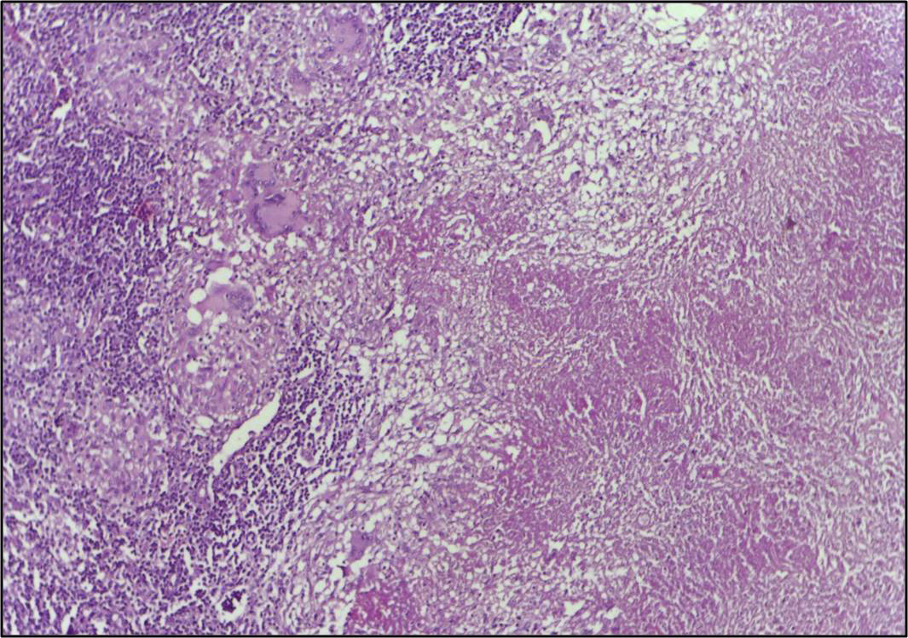
- Voľným okom vyzerá ako „zosýrovatenie“ – typický nález pri tuberkulóze.
Je to v podstate kombinácia koagulačnej aj kolikvačnej nekrózy naraz: tkanivo je makroskopicky syrovité (ani celkom tuhé, ani tekuté) a mikroskopicky ide o amorfnú ružovú hmotu s bazofilným „poprašom“ jadrových úlomkov. Vzniká pri imunitnej reakcii proti mykobaktériám (aktivované makrofágy a T lymfocyty ničia infikované bunky); presný dôvod, prečo sa tkanivo neskvapalní ani celkom nestuhne, nie je úplne objasnený.
- Kaseifikačná nekróza môže sekundárne kalcifikovať (viditeľné na RTG dlho po infekcii) alebo naopak skvapalnieť (tuberkulózny hnis) – skvapalnenie pomáha šíreniu tuberkulózy, lebo sa ľahšie prevalí do priedušky a pacient ho vykašliava (→ 6.5.2 Latencia, reaktivácia a kaverna).
1.6.4Tuková (Balserova) nekróza
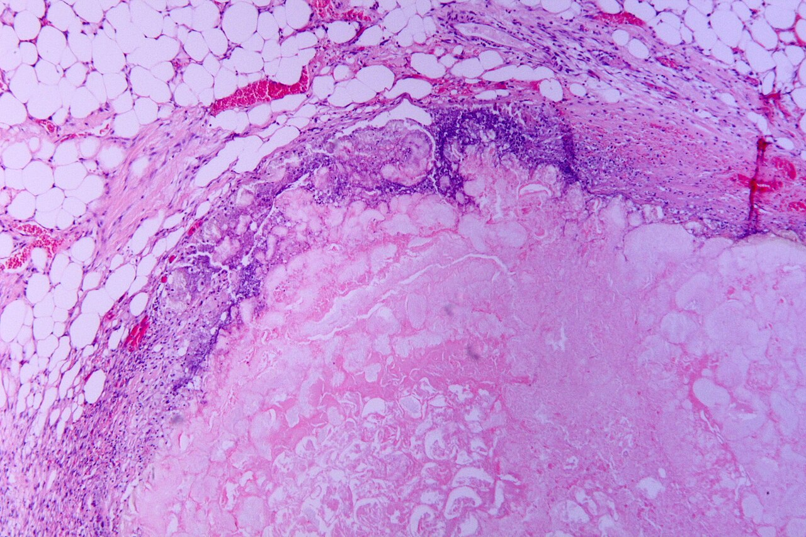
- Tukové bunky zomierajú dvoma cestami, ktoré dajú podobný obraz:
- enzymatická – pri akútnej pankreatitíde unikne aktivovaná lipáza do okolitého tuku (okolie pankreasu, omentum, mezentérium). Rozštiepi triacylglyceroly na glycerol a mastné kyseliny, ktoré viažu vápnik → vápenaté mydlá (saponifikácia): drobné kriedovobiele ložiská. Vápnik viazaný v mydlách chýba v krvi – hypokalciémia je znakom ťažkej pankreatitídy.
- traumatická – úder rozdrví adipocyty (typicky v prsníku); uvoľnený tuk vyvolá zápal s penovými makrofágmi a neskôr jazvu, ktorá sa pohmatom aj na mamografe môže podobať karcinómu.
- Podľa prvého opisovateľa sa nazýva aj Balserova nekróza.
Nezamieňaj so steatózou (→ 2.3.1 Steatóza)! Steatóza je reverzibilné hromadenie tuku vo vnútri živých buniek. Tuková nekróza je nezvratná smrť tukových buniek s uvoľnením a chemickou premenou ich obsahu.
1.6.5Fibrinoidná nekróza
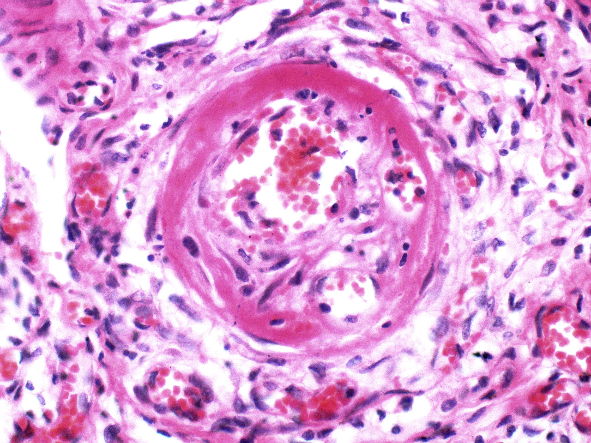
- Popisný mikroskopický termín pre ukladanie materiálu podobného fibrínu do steny cievy. Spoločným menovateľom je vždy poškodený endotel, cez ktorý do steny prenikne plazma s fibrinogénom (ten sa tam zmení na fibrín):
- najčastejšie ho poškodia uložené imunokomplexy (imunokomplexová vaskulitída, revmatoidná artritída, Arthusova reakcia) – aktivujú komplement a privolajú neutrofily, ktoré stenu natrávia svojimi enzýmami,
- bez účasti imunity ho poškodí aj samotný vysoký tlak pri malígnej hypertenzii.
Toto je presne tá istá fibrinoidná dystrofia (→ 2.4.4 Fibrinoidná dystrofia) – len tu je zdôraznené, že pri pokročilom poškodení steny cievy hovoríme už o fibrinoidnej nekróze (bunky steny skutočne odumreli), nie len o depozite.
1.6.6Hemoragická nekróza
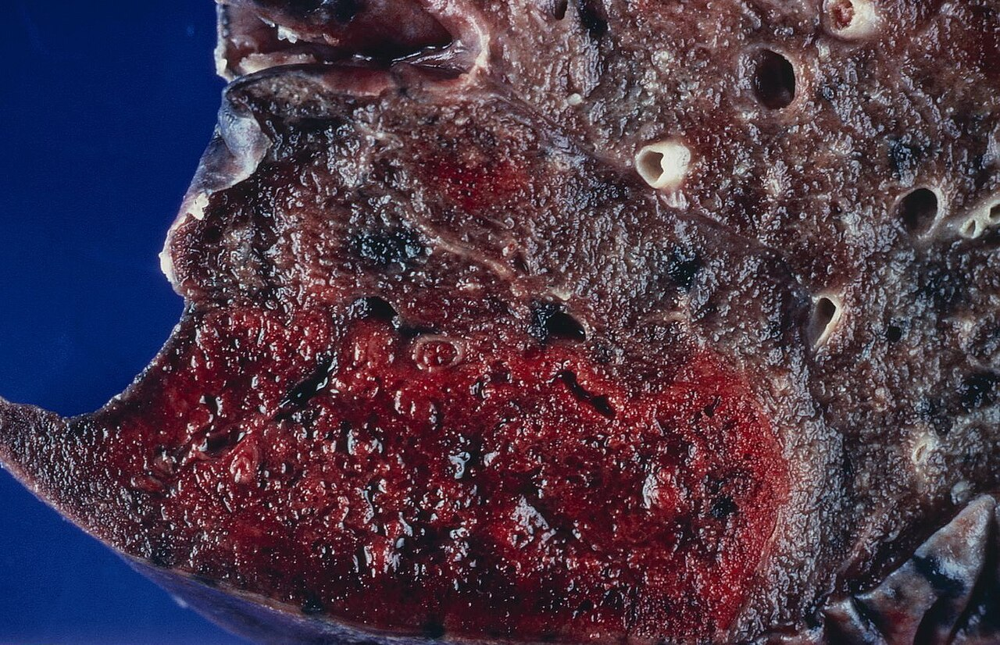
- Nie je to samostatný druh smrti buniek, ale nekróza, do ktorej presiakli erytrocyty. Podmienka je vždy tá istá: do mŕtveho tkaniva ešte prichádza krv, a steny odumretých kapilár ju už neudržia. Odkiaľ krv prichádza, určuje orgán:
- druhý prívod – pľúca a pečeň majú dve zásobujúce riečiská; keď sa jedno upchá, tkanivo síce odumrie, ale druhé ho ďalej zaplavuje krvou,
- zablokovaný odtok – pri uzávere žily (uväznená črevná slučka, torzia semenníka) tepna ešte chvíľu tlačí krv do tkaniva, z ktorého nemá kam odtiecť (hemoragická infarzácia),
- obnovený prietok – keď sa uzáver tepny uvoľní (rozpadne sa embolus, trombolýza), krv sa vráti do už poškodených ciev (napr. „červená“ encefalomalácia v mozgu).
Pľúcne infarkty sú preto typicky červené (dvojitý obeh: pulmonálne aj bronchiálne artérie), zatiaľ čo infarkty obličky alebo sleziny (len jedna koncová tepna) bývajú bledé – klasický párový fakt na skúšku.
1.6.7Ďalšie typy: Zenkerova nekróza, guma
- Zenkerova (voskovitá) nekróza postihuje priečne pruhovaný sval pri ťažkých horúčkovitých infekciách a toxémiách; klasicky ju opísali pri brušnom týfuse. Kontraktilné bielkoviny vlákna sa zrazia do homogénnej, sklovitej eozinofilnej hmoty – priečne pruhovanie zmizne a jadrá zaniknú. Vzhľad zodpovedá hyalínu (→ 2.4.2 Hyalínne dystrofie), preto sa jej hovorí aj hyalínna nekróza svalu. Voľným okom je sval bledý, lesklý ako vosk a krehký.
- Najčastejšie postihne priamy brušný sval a bránicu. Krehké vlákna sa môžu natrhnúť a krvácať do pošvy priameho svalu; odumretú hmotu potom odpratajú makrofágy.
- Guma je ložisko nekrózy pri terciárnom syfilise (Treponema pallidum). Zápal zúži malé tepny (obliteratívna endarteritída) → tkanivo odumrie ischémiou a vzniká tuhé, gumovité ložisko obkolesené makrofágmi, väzivom a nápadným množstvom plazmocytov. Na rozdiel od kazea v ňom často ostávajú obrysy pôvodného tkaniva (→ 6.9 Granulóm na poškodenej cieve a väzive).
Obe tvoria nekrotické ložisko s granulomatóznym lemom. Pre gumu svedčia plazmocyty v leme a zhrubnuté steny malých tepien; rozhodne však dôkaz pôvodcu – sérológia syfilisu, alebo mykobaktérie (Ziehl–Neelsen, PCR) pri tuberkulóze.
1.7Príčiny a ďalší osud nekrózy
1.7.1Príčiny
| Skupina | Mechanizmus | Príklad |
|---|---|---|
| Hypoxia a ischémia | chýba O₂ → zlyhá tvorba ATP → celá kaskáda z → 1.5.1 Mechanizmus (Na⁺/K⁺-ATPáza zlyhá, Ca²⁺ vteká dnu, natrávenie bunky) | infarkt (nedokrvenie), šok |
| Infekcie | priamy cytopatický efekt vírusu v napadnutej bunke, alebo vlastná zápalová reakcia na baktérie – neutrofily uvoľnia enzýmy a radikály, ktoré zničia aj okolité zdravé tkanivo (hnis) | nekróza hepatocytov pri hepatitíde |
| Fyzikálne | teplo denaturuje bielkoviny priamo; chlad tvorí v bunke ľadové kryštály, ktoré roztrhnú membrány; elektrický prúd poškodí bunky teplom aj elektroporáciou membrán; žiarenie ionizuje a poškodzuje DNA priamo aj cez voľné radikály | popáleniny, omrzliny, úraz elektrickým prúdom, RTG žiarenie |
| Chemické | toxín buď priamo poškodí membrány/enzýmy, alebo sa v tele premení na toxický medziprodukt; niektoré pôsobia selektívne na jeden typ bunky, lebo práve tie ho najviac vychytávajú alebo metabolizujú – napr. sublimát (ortuťnatá soľ) sa vylučuje močom, preto postihne prednostne proximálny stočený kanálik obličky, ktorý ho reabsorbuje | otravy, lieky vo vysokej dávke |
| Imunologické | Arthusov fenomén: lokálne uložené imunokomplexy aktivujú komplement a privolajú neutrofily, ktoré do steny cievy uvoľnia enzýmy a radikály (rovnaký princíp ako pri fibrinoidnej nekróze, → 1.6.5 Fibrinoidná nekróza) | lokálna imunokomplexová reakcia po opakovanom podaní antigénu |
1.7.2Čo sa deje s nekrotickým tkanivom ďalej
- Ak epizóda nekrózy nie je pre pacienta fatálna, okolité vitálne tkanivo na ňu zareaguje:
- resorpcia a hojenie – makrofágy nekrotické zvyšky postupne vstrebú, defekt sa vyplní granulačným tkanivom a zjazví (→ 5.7 Organizácia: čo telo samo nevstrebe)
- pseudocysta – pri väčšej kolikvačnej nekróze (mozog, pankreas) po resorpcii nezostane jazva, ale dutina bez výstelky
- sekvestrácia – mŕtvy úlomok tkaniva (sekvester) sa oddelí od živého okolia, typicky pri osteomyelitíde kosti; ak k tomu dôjde v sliznici, hovoríme o exulcerácii a vzniká vred (napr. vredová choroba žalúdka)
- dystrofická kalcifikácia – fosfolipidy rozpadnutých membrán viažu Ca²⁺ a fosfatázy k nim dodajú fosfát → kryštály fosforečnanu vápenatého; vzniká pri normálnej hladine Ca²⁺ v krvi (na rozdiel od metastatickej kalcifikácie pri hyperkalciémii), typicky v kaseifikačnej nekróze a starých trombech
- hnisanie – pri sekundárnej bakteriálnej infekcii nekrotického tkaniva
- gangréna – mŕtve tkanivo, ktoré je v styku s okolím, na vzduchu vyschne alebo ho osídlia anaeróbne baktérie (→ 1.8 Gangréna)
1.8Gangréna
Gangréna nie je ďalší spôsob, akým bunky umierajú, ale osud už odumretého tkaniva, ktoré ostalo v styku s vonkajším prostredím (prsty, končatina, črevo). Rozhoduje, čo sa s ním stane ďalej: či z neho voda odparí, alebo ho rozložia baktérie – a ak baktérie, či pri tom tvoria plyn. Podľa toho sú tri typy. Mŕtve tkanivo nemá krvný obeh, preto doň neprenikne ani imunitná odpoveď, ani antibiotikum: baktérie v ňom rastú bez odporu a prenikajú do živého okolia a do krvi. Gangréna sa preto nelieči len liekmi, ale odstránením mŕtveho tkaniva (nekrektómia, amputácia).
| Typ | Mechanizmus | Príklad |
|---|---|---|
| Suchá (mumifikácia) | tkanivo vysychá; koagulačná nekróza + dehydratácia; čiernu farbu dáva hematín, pigment z oxidovaného hemu rozpadnutých erytrocytov; bez infekcie, lebo baktérie v suchom tkanive neprežívajú | periférne artériové ochorenie, omrzliny prstov, diabetická noha |
| Vlhká (humida) | hniloba anaeróbnymi baktériami vo vlhkom prostredí; sirovodík z rozkladu bielkovín reaguje s hemoglobínom na zelený verdohemoglobín | Noma (tvár, u podvyživených detí), gangréna čreva |
| Plynová | α-toxín C. perfringens (fosfolipáza C) rozkladá membrány svalových buniek a endotelu → nekróza sa šíri pozdĺž svalu rýchlejšie, než ju obmedzí zápal; klostrídie kvasia sacharidy na plyny (najmä vodík a oxid uhličitý); tkanivo pod prstami „praská“ (crepitus); rýchla toxémia a sepsa | infekcia hlbokých rán Clostridium spp. |
- Pri suchej gangréne reaguje živé tkanivo na susedstvo mŕtveho zápalom: na rozhraní vznikne prekrvený pás s granulačným tkanivom (demarkačná čiara, demarkačný lem), ktorý mŕtvu časť postupne oddeľuje. Chirurg podľa neho volí výšku amputácie.
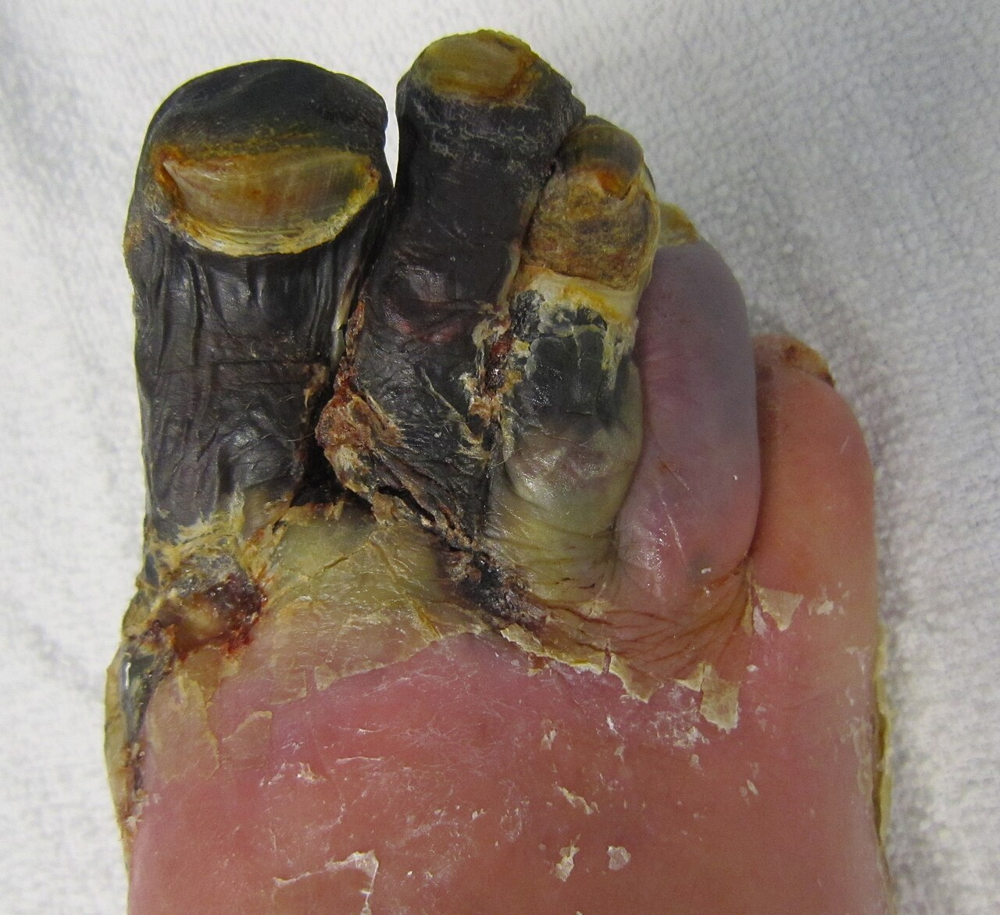
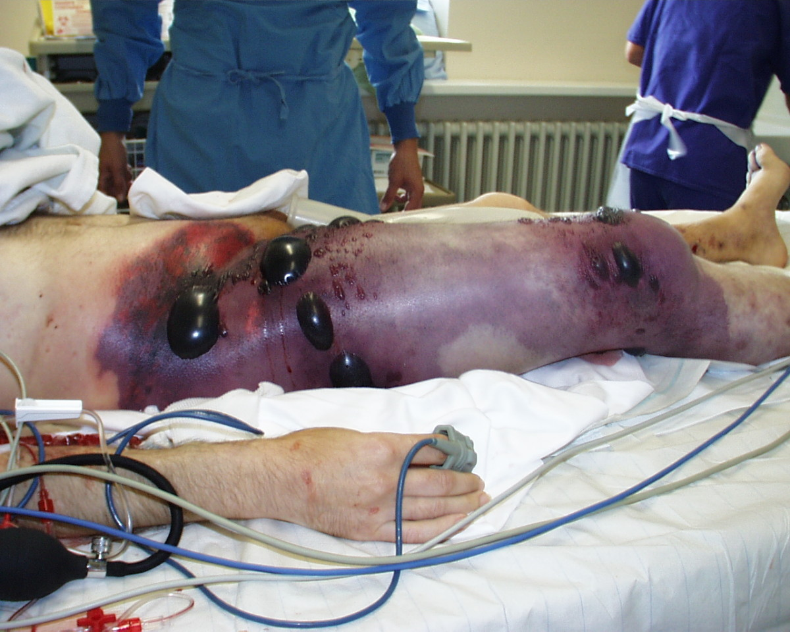
Diabetická noha je najčastejší klinický kontext gangrény: neuropatia (necíti poranenie) + ischémia (zle sa hojí) + infekcia (ľahko sa infikuje) dohromady vedú najčastejšie k prechodu suchej gangrény na vlhkú pri sekundárnej infekcii.
1.9Autofágia
- Autofágia („samo-jedenie“) je fyziologický proces, ktorým bunka priebežne rozkladá a recykluje vlastné poškodené organely a súčasti cytoplazmy. Nie je to bunková smrť, ale naopak nástroj prežitia pri nedostatku živín – bunka si takto „vypožičia“ stavebné látky a energiu sama od seba.
nedostatok živín alebo poškodená organela → okolo „nákladu“ (kúsok cytoplazmy, mitochondria) sa rozrastá miska z dvoch membrán – fagofor, membránu dodáva hlavne endoplazmatické retikulum → okraje misky sa zatvoria → mechúrik s dvojitou stenou, autofagozóm (autofagická vakuola) → spojenie s lyzozómom = autofagolyzozóm → kyslé hydrolázy rozložia náklad na aminokyseliny, mastné kyseliny a cukry → bunka ich použije ako palivo a stavebný materiál.
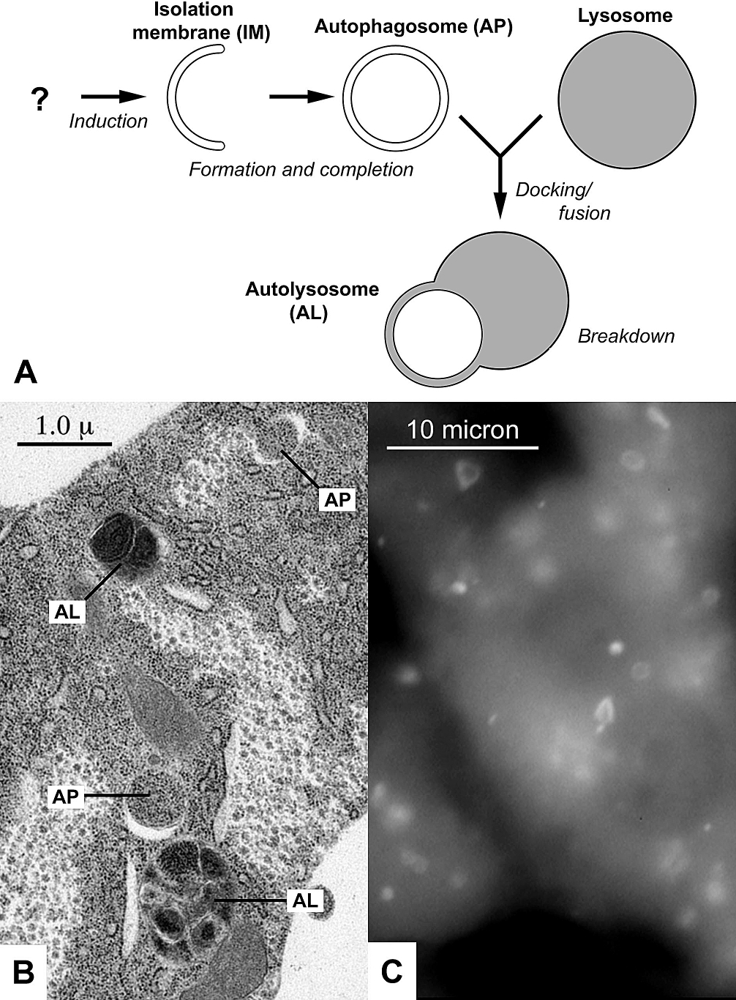
Autofágia je jeden z dvoch mechanizmov, ktorými vzniká prostá atrofia (→ 1.2 Atrofia) – bunka sa autofágiou postupne zmenší, no ostáva nažive. Ak je bunka vystavená stresu dlhodobo a nadmerne (hladovanie, toxíny), nadmerná autofágia môže „zjesť“ priveľa vlastných organel vrátane mitochondrií a viesť až k bunkovej smrti.
1.10Smrť organizmu a posmrtné zmeny
- Smrť (exitus letalis) nie je samotná zástava obehu a dýchania, ale stav, keď sa už nedajú znovu spustiť – rozhoduje nevratnosť. Dnes sa určuje dvoma cestami:
- cirkulačná smrť – srdce sa zastavilo a obeh sa neobnoví; doloží ju EKG bez elektrickej aktivity alebo ultrazvuk, na ktorom sa srdce nehýbe
- smrť mozku – hlboké kóma s vymiznutými reflexmi mozgového kmeňa a preukázanou zástavou prietoku krvi mozgom (angiografia, perfúzna scintigrafia); kľúčová pre transplantačnú medicínu, lebo umožňuje odber orgánov od darcu s ešte bijúcim srdcom
Klinická smrť je obdobie, keď obeh a dýchanie už stoja, no bunky mozgu ešte nie sú nezvratne poškodené – resuscitácia má zmysel práve v tomto okne. Rovnaká hranica reverzibility ako pri ischémii jednej bunky (→ 1.5.3 Bod nezvratnosti a reperfúzia), len na úrovni celého organizmu.
1.10.1Posmrtné (kadaverózne) zmeny
- Po zastavení obehu telo prestane tvoriť ATP a teplo a riadi sa už len fyzikou a chémiou. Zmeny nastupujú v predvídateľnom poradí, preto z nich súdny lekár odhaduje čas smrti. Rovnaká autolýza hrozí aj tkanivu odobratému pri biopsii – zastaví ju až fixácia (→ 0.4 Cesta vzorky: od odberu po preparát).
| Zmena | Prečo vzniká | Kedy (orientačne) | Čo z nej vyčítaš |
|---|---|---|---|
| Bledosť a posmrtné škvrny (livores mortis) | krv bez tlaku srdca pasívne klesá do najnižšie položených ciev (hypostáza) | škvrny o niekoľko hodín | polohu, v ktorej telo ležalo |
| Chladnutie (algor mortis) | telo netvorí teplo a vyrovnáva sa s okolím | ≈ 0,8 °C/h; závisí od prostredia, oblečenia a stavby tela | čas smrti v prvých hodinách |
| Stuhnutie (rigor mortis) | ATP chýba na uvoľnenie väzby aktín–myozín (nie na jej vznik) – svaly ostanú stiahnuté | nástup 1–2 h, vrchol ≈ 12 h, ústup za 24–48 h (autolýza vlákien) | čas smrti |
| Posmrtné zrazeniny (cruores mortis) | rozpadajúci sa endotel uvoľní tromboplastín a krv sa v cievach zrazí | hodiny | odlíšenie od trombu: lesklé, na stenu nenasadajú, dajú sa vybrať vcelku |
| Vysychanie | chýba bariéra a vlhčenie | hodiny | zaschnutá rohovka, oderky |
| Autolýza | vlastné enzýmy natrávia bunky skôr, než prídu baktérie; najskôr v žalúdku, čreve a pankrease | hodiny | obraz ako pri nekróze, ale bez zápalu |
| Hniloba (putrefakcia) | anaeróbne baktérie z čreva rozkladajú tkanivá | dni | – |
1.11Súhrn a rýchle rozlíšenie
| Typ nekrózy | Kľúčový mechanizmus | Typický príklad |
|---|---|---|
| Koagulačná | veľa bielkovín, denaturácia > enzymatický rozpad → tkanivo stuhne | infarkt myokardu, obličky, sleziny |
| Kolikvačná | veľa proteáz (neutrofily) alebo ischémia mozgu → enzymatické skvapalnenie | infarkt mozgu, absces |
| Kaseózna | imunitná (granulomatózna) reakcia na mykobaktérie; obraz medzi koagulačnou a kolikvačnou, príčina nie je úplne objasnená | tuberkulóza |
| Tuková (Balserova) | lipáza rozštiepi tuk → saponifikácia; alebo trauma adipocytov | akútna pankreatitída, trauma prsníka |
| Fibrinoidná | imunokomplexy alebo poškodený endotel + plazma v stene cievy | vaskulitídy, malígna hypertenzia |
| Hemoragická | erytrocyty presiaknu do mŕtveho tkaniva (druhý prívod, zablokovaný odtok, obnovený prietok) | pľúcny infarkt, torzia semenníka |
| Zenkerova (voskovitá) | zrazenie kontraktilných bielkovín, strata pruhovania | ťažké horúčkovité infekcie (brušný týfus) |
| Guma | ischemická nekróza z endarteritídy, lem s plazmocytmi | terciárny syfilis |
Atrofia – bunky ostávajú nažive, len sa zmenšia/uberie ich počet. Nekróza – nekontrolovaný, energeticky pasívny rozpad s únikom obsahu a zápalom. Apoptóza – riadený, energiu spotrebúvajúci „úhľadný“ zánik jednotlivej bunky bez zápalu.
- Dystrofia → atrofia → nekróza je jedna škála narastajúcej závažnosti poškodenia – rovnaká noxa môže dať ktorýkoľvek z týchto troch obrazov podľa svojej intenzity a dĺžky pôsobenia.
1.12Otázky na zopakovanie
Prečo je troponín v krvi zvýšený skôr, než je infarkt vidieť v mikroskope?
Troponín unikne cez poškodenú membránu kardiomyocytu v priebehu prvých hodín. Obraz na reze je však výsledok rozkladu – enzýmy musia natráviť bielkoviny a jadro a zmeniť väzbu farbív –, a to trvá 4–12 h (mikroskopicky) a 12–24 h (makroskopicky). → 1.5.2 Histologické znaky nekrotickej bunkyPacient zomrel 2 h po uzávere koronárnej tepny a srdce vyzerá na pitve makroskopicky normálne. Vylučuje to infarkt?
Nie. Makroskopická zmena sa objaví až po 12–24 h; nekrózu treba hľadať mikroskopicky alebo histochemicky. → 1.5.2 Histologické znaky nekrotickej bunkyČím na reze odlíšiš nekrózu od posmrtnej autolýzy?
Vitálnou (zápalovou) reakciou okolia. Leukocyty okolo odumretého tkaniva dokazujú, že poškodenie vzniklo za života; autolýza zápal nemá. → 1.5 Nekróza – základné pojmy a priebehPrečo apoptóza nevyvolá zápal, kým nekróza áno?
Pri apoptóze ostáva membrána celá a preklopený fosfatidylserín privolá fagocyty, ktoré telieska pohltia skôr, než membrána praskne. Pri nekróze membrána praskne hneď a obsah bunky (DAMP: DNA, ATP, HMGB1) aktivuje makrofágy a endotel. → 1.4 ApoptózaČo je bod nezvratnosti ischemickej bunky a prečo ju môže zabiť až reperfúzia?
Trvalé otvorenie mitochondriového póru MPT – mitochondria potom nevyrobí ATP ani s kyslíkom. Počas ischémie drží pór zatvorený kyslé pH; po reperfúzii sa pH upraví a zároveň pribudnú ROS a Ca²⁺ v mitochondriách, takže pór sa otvorí práve vtedy. → 1.5.3 Bod nezvratnosti a reperfúziaPrečo je infarkt pľúc červený a infarkt obličky bledý?
Pľúca majú dvojitý obeh (pulmonálne aj bronchiálne tepny) – druhá cieva privádza krv do mŕtveho tkaniva. Oblička a slezina majú koncové tepny, do ložiska krv nepríde. → 1.6.6 Hemoragická nekrózaPrečo ischemické tkanivo srdca stuhne (koagulačná nekróza), kým absces sa skvapalní?
Po ischémii klesne pH a denaturujú štruktúrne bielkoviny aj enzýmy, ktoré by tkanivo rozložili – tvar sa na dni zachová. V absces prevážia proteázy masy neutrofilov a tkanivo natrávia. Pri mozgu (tiež kolikvácia) dôvod nie je úplne objasnený. → 1.6 Druhy nekrózyPrečo pri nádorovej kachexii samotná výživa atrofiu nezastaví?
Cytokíny (TNF, IL-1, IL-6) nielen tlmia chuť do jedla, ale aj priamo zrýchľujú odbúravanie svalových bielkovín a lipolýzu. → 1.2.1 Príčiny atrofieAko odlíšiš dystrofickú kalcifikáciu od metastatickej?
Dystrofická vzniká v odumretom tkanive pri normálnej hladine Ca²⁺ v krvi (Ca²⁺ viažu fosfolipidy rozpadnutých membrán); metastatická pri hyperkalciémii v živom tkanive. → 1.7.2 Čo sa deje s nekrotickým tkanivom ďalejPrečo vzniká posmrtná stuhlosť, keď sval po smrti nemá energiu?
ATP netreba na vznik väzby aktín–myozín, ale na jej uvoľnenie. Bez ATP ostanú mostíky zopnuté; stuhlosť ustúpi až autolýzou vlákien za 24–48 h. → 1.10.1 Posmrtné (kadaverózne) zmeny
1.13Zdroje
- Zámečník J. a kol.: Patologie, 2. vyd., Praha: LD Prager Publishing, 2024. ISBN 978-80-11-04919-5.
- Galluzzi L. et al.: Molecular mechanisms of cell death: recommendations of the Nomenclature Committee on Cell Death 2018. Cell Death Differ 2018;25:486–541. doi:10.1038/s41418-017-0012-4
- Buja L. M.: Pathobiology of myocardial ischemia and reperfusion injury: models, modes, molecular mechanisms, modulation, and clinical applications. Cardiol Rev 2023;31(5):252–264. doi:10.1097/CRD.0000000000000440
- Thygesen K., Alpert J. S., Jaffe A. S. et al.: Fourth universal definition of myocardial infarction (2018). Eur Heart J 2019;40(3):237–269. doi:10.1093/eurheartj/ehy462
- StatPearls (NCBI Bookshelf): Necrosis Pathology · Postmortem Changes · Algor Mortis
Autor, licencia a odkaz na zdroj sú pri každom obrázku; súhrn je v registri ZDROJE-OBRAZKOV.md.
Pokračuje v: → 2.1 Základ: čo sa deje s poškodenou bunkou